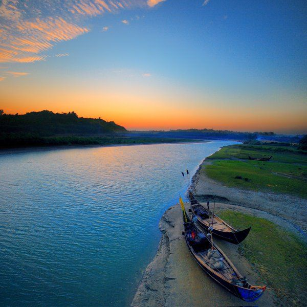
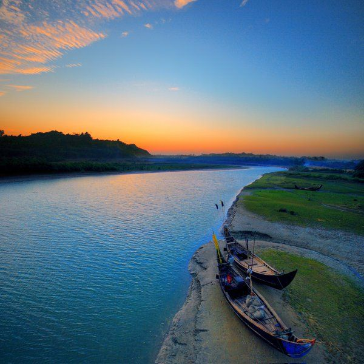

COX'S BAZAR
EXPLORE COX'S BAZAR
ABOUT
Cox's Bazar (Bengali: কক্সবাজার অথবা ৭৫ মাইল বীচ, Koksbajar, Koksbazar or Kokshbajar) is a town, a fishing port and district headquarters in Bangladesh. The beach in Cox's Bazar is an unbroken 120 km (75 mi) sandy sea beach with a gentle slope, is the world's longest.[2][3][4] It is located 150 km (93 mi) south of the industrial port Chittagong. Cox's Bazar is also known by the name Panowa, whose literal translation means "yellow flower." Its other old name was "Palongkee". The modern Cox's Bazar derives its name from Captain Hiram Cox (died 1799), an officer of the British East India Company. Cox was appointed Superintendent of Palongkee outpost after Warren Hastings became Governor of Bengal. Captain Cox was specially mobilised to deal with a century-long conflict between Arakan refugees and local Rakhains. He embarked upon the task of rehabilitating refugees in the area and made significant progress. Captain Cox died in 1799 before he could finish his work. To commemorate his role in rehabilitation work, a market was established and named Cox's Bazar ("Cox's Market") after him. Today, Cox's Bazar is one of the most-visited tourist destinations in Bangladesh, though it is not a major international tourist destination. In 2013, the Bangladesh Government formed the Tourist Police unit to better protect local and foreign tourists, as well as to look after the nature and wildlife in the tourist spots of Cox's Bazar. Cox's Bazar (Town), Cox's Bazar municipality, was constituted in 1869, eventually becoming a B-grade municipality in 1989. Located along the Bay of Bengal in South Eastern Bangladesh, Cox's Bazar Town is a large port and health resort. But it is famous mostly for its long natural sandy beach. The municipality covers an area of 6.85 km2 (2.64 sq mi) with 27 mahallas and 9 wards and has a population of 51,918.[6] Cox's Bazar is connected by road and air with Chittagong.
CLIMATE
Cox's Bazar town with an area of 6.85 km2 (2.64 sq mi), is located at 21°35′0″N 92°01′0″E and bounded by Bakkhali River on the north and East, Bay of Bengal in the West, and Jhilwanj Union in the south. The climate of Bangladesh is mostly determined by its location in the tropical monsoon region: high temperature, heavy rainfall, generally excessive humidity, and distinct seasonal variations.[13] The climate of Cox's bazar is mostly similar to the rest of the country. It is further characterised by the location in the coastal area. The annual average temperature in Cox's Bazar remains at about a maximum of 34.8 °C (94.6 °F) and a minimum of 16.1 °C (61.0 °F). The average amount of rainfall remains at 3,524 mm (138.7 in).
AREAS OF COX'S BAZAR
COX'S BAZAR

HIMCHARI
INANI BEACH
ACCOMODATIONS IN COX'S BAZAR
SAYEMAN
ROYAL
LONGBEACH
PARADISE